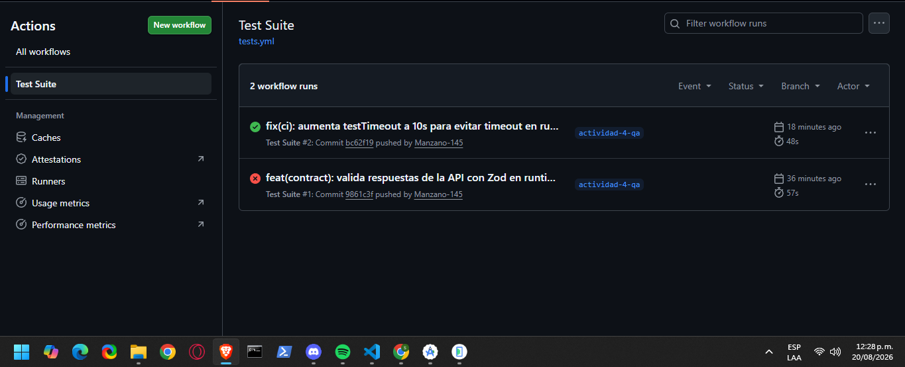
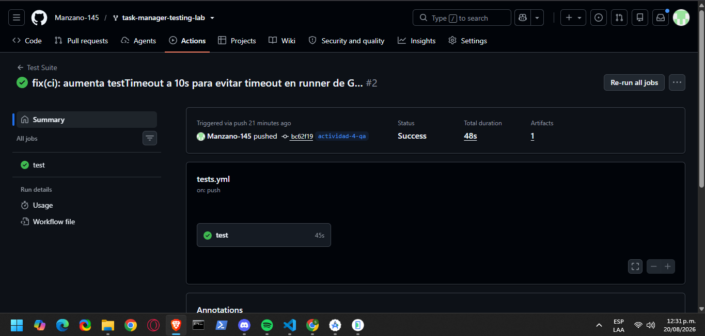
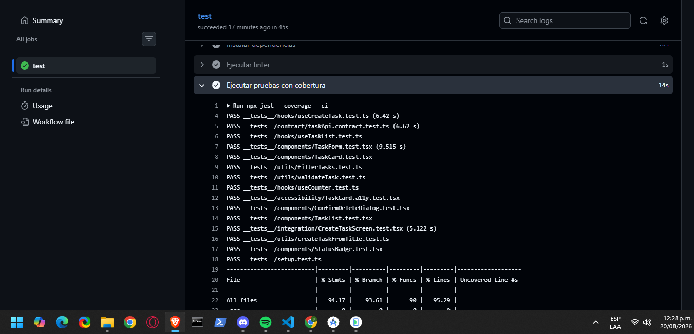

Nota de transparencia: el repositorio base del docente ya incluía scaffolding relacionado con esta actividad (esquema Zod, un primer test de contrato y el workflow de CI), verificado con git log (intactos desde el commit inicial). Este informe distingue explícitamente qué se reutilizó tal cual y qué se agregó como trabajo propio.
Medido sobre el AVD ACTIVIDAD_4 (Android Studio), build debug generado con npx expo run:android, usando adb directo (sin herramientas de terceros).
| Métrica | Método | Resultado |
|---|---|---|
| Tiempo de arranque en frío | adb shell am start -W tras am force-stop, 3 corridas | 1232 / 1173 / 1176 ms → promedio 1.19 s |
| Uso de memoria (PSS) | adb shell dumpsys meminfo com.taskmanager.app tras carga inicial | ~121 MB (TOTAL PSS 123 919 KB; Native Heap 10.5 MB, Dalvik Heap 6.1 MB) |
Cuello de botella: 1.19 s de arranque y ~121 MB de PSS son altos para una app de listas/CRUD simple. Ambos números corresponden a un build debug (Hermes sin bytecode precompilado, dev menu y conexión a Metro activos), comportamiento conocido por inflar arranque y memoria frente a producción.
Propuesta: repetir la medición sobre build release (npx expo run:android --variant release) para aislar cuánto del costo actual es real y cuánto es artefacto del entorno de desarrollo.
Revisión de código real sobre src/, sin herramientas externas (MobSF/ZAP no configuradas en esta pasada).
| Punto OWASP | Cumple | Hallazgo | Corrección |
|---|---|---|---|
| M4 – Insufficient Input/Output Validation | No cumplía | taskService.ts hacía res.json() sin validar el shape, pese a existir TaskSchema/TaskListSchema sin usar en runtime. | Corregido en esta entrega: fetchTasks/createTask ahora parsean con .parse() de Zod y rechazan si no cumple el contrato. |
| M5 – Insecure Communication | Parcial | HTTPS hardcoded (correcto), pero sin AbortController/timeout ni política ATS explícita en app.json. | Agregar AbortController con timeout; declarar ATS explícito si se distribuye a producción. |
| M9 – Insecure Data Storage | No aplica | No hay AsyncStorage/SecureStore; el estado vive solo en memoria (confirmado en todo src/). | Sin acción; a futuro usar expo-secure-store para cualquier dato sensible. |
| M2 – Inadequate Supply Chain (extra) | No cumplía | npm audit real: 25 vulnerabilidades (7 moderate, 18 high), concentradas en tooling de Expo. | Planificar npm audit fix y revisar breaking changes antes de --force. |
src/schemas/taskSchema.ts (ya existente, reutilizado sin cambios) define TaskSchema (id, title, status: pending/completed, createdAt opcional) y TaskListSchema. Aporte de esta entrega: se cableó ese esquema en taskService.ts (hallazgo M4) y se agregaron 4 pruebas nuevas contra el servicio real (mockeado con MSW, mismo patrón del proyecto):
| Prueba | Qué verifica |
|---|---|
fetchTasks() — respuesta válida | Resuelve con los datos cuando cumple el contrato. |
fetchTasks() — respuesta inválida (sin title) | Rechaza (rejects.toThrow) en vez de propagar datos corruptos. |
createTask() — respuesta válida | Resuelve con la tarea creada cuando cumple el contrato. |
createTask() — status fuera del enum ('archived') | Rechaza — el enum de Zod bloquea valores no contemplados. |
Suite completa: 64 pruebas, 15 suites, todas en verde; cobertura global 94.17% stmts / 93.61% branches / 90% funciones / 95.29% líneas (umbral mínimo: 70% en las 4 métricas).
.github/workflows/tests.yml ya existía con un job básico; extendido en esta entrega: trigger ampliado a ramas actividad-** además de main/develop; step de lint (npx eslint .) antes de los tests; artifact de cobertura (actions/upload-artifact@v4 sobre coverage/). El umbral de 70% ya estaba configurado en jest.config.js y Jest lo hace fallar nativamente si no se cumple.
Hallazgo real durante esta entrega: el primer push falló en CI (no en local) porque el test de integración CreateTaskScreen.test.tsx superó el timeout default de Jest (5000 ms) en el runner de GitHub Actions, más lento que el equipo de desarrollo (siempre corre en <1 s local). Se corrigió subiendo testTimeout a 10000 ms en jest.config.js, y la corrida siguiente pasó en verde — evidencia adjunta en evidencias/github-actions-run.png.

Ruta Actions → Test Suite del repositorio, con el historial de corridas sobre la rama actividad-4-qa.

Corrida exitosa (Success, 48s) del commit con el fix de testTimeout — job test en verde.

Log real del step Ejecutar pruebas con cobertura: 15 suites en verde y métricas de cobertura por archivo.
Esta entrega cubre los cuatro frentes pedidos: rendimiento medido con datos reales de adb con un cuello de botella identificado y su propuesta de verificación en release; seguridad revisada contra 4 puntos de OWASP Mobile Top 10 con una corrección real aplicada (M4); contrato de API reforzado con validación runtime real y 4 pruebas nuevas; y CI/CD extendido con lint, artifact de cobertura y trigger por rama, depurado hasta lograr una corrida real y verde en GitHub Actions.